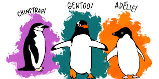
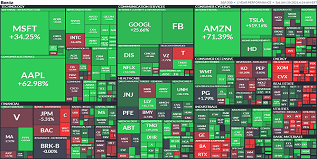

EDA - Data Set Pinguinos Palmer
El objetivo de este análisis exploratorio de datos es el de aplicar la metodología demarcada por Google,
en un set de datos conocido con el fin de realizar ejercicios de aprendizaje en Python, enmarcado en el manejo de
librerías como Pandas, Seaborn y Matplotlib.
Análisis de correlación entre películas
El objetivo de este proyecto es el de aplicar análisis de datos para establecer la correlación entre variables en los datos de la industria del cine.
El set de datos originalmente fue obtenido mediante extracción desde Internet Movie DataBase, o IMDb según las siglas por las que es internacionalmente conocida, es la más importante base de datos de cine y televisión del mundo.
Extracción de datos criptomonedas con una API
Automatización de un proceso de extracción de datos de criptomonedas por medio de un API. Extrayendo información relevante como el precio, el volumen, y las distintas variaciones del precio que han sufrido las diez criptomonedas más
comercializadas durante diferentes periodos, para la generación de gráficos comparativos y de comportamiento de precios en un lapso dado.

Generación de un portafolio de inversión en Python
Extracción de información bursátil desde Yahoo Finance, de cerca de 3600 acciones que conforman el Wilshire 5000, para la generación de cálculos con el fin de establecer el rendimiento diario, rendimiento acumulado, media móvil del precio de cierre y demás datos para la graficación de bandas e Ishimoku.
Y así efectuar simulaciones de pesos para hallar un portafolio con la menor volatilidad y mayor rendimiento.